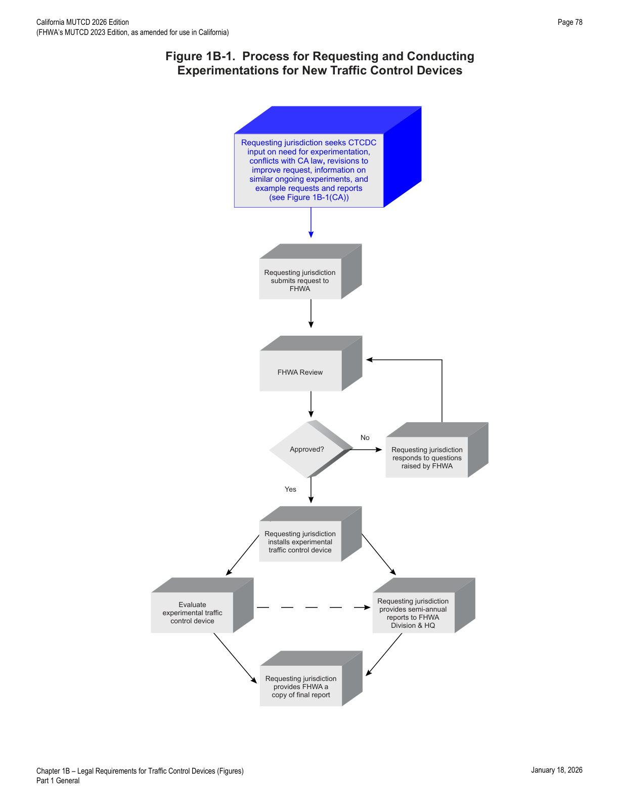
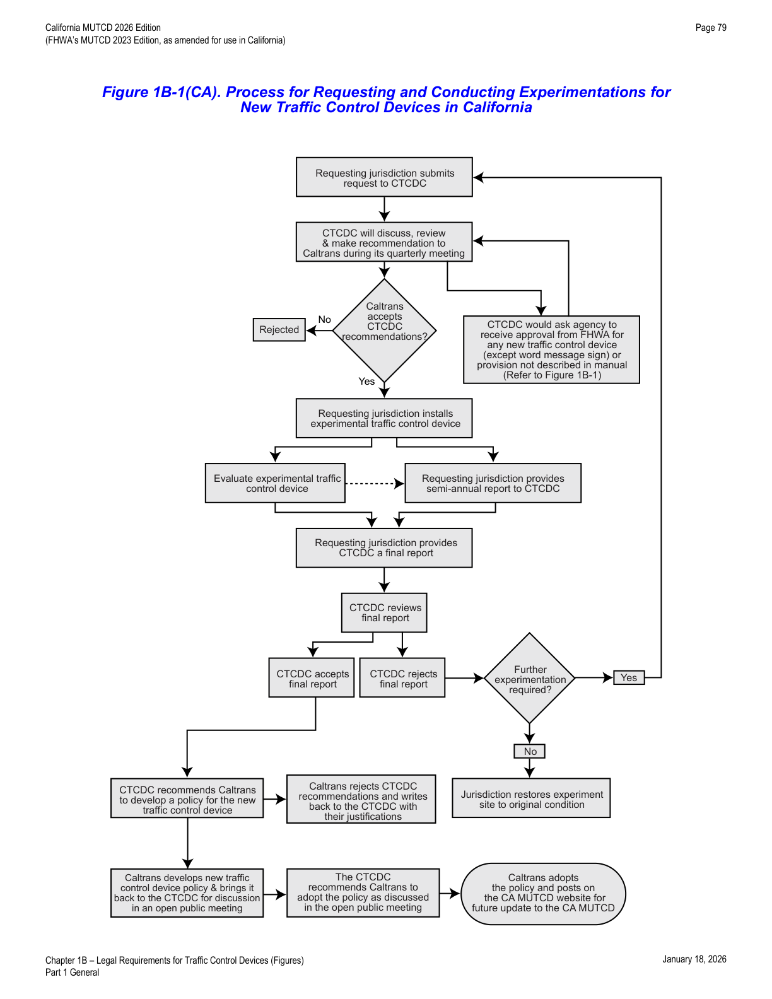
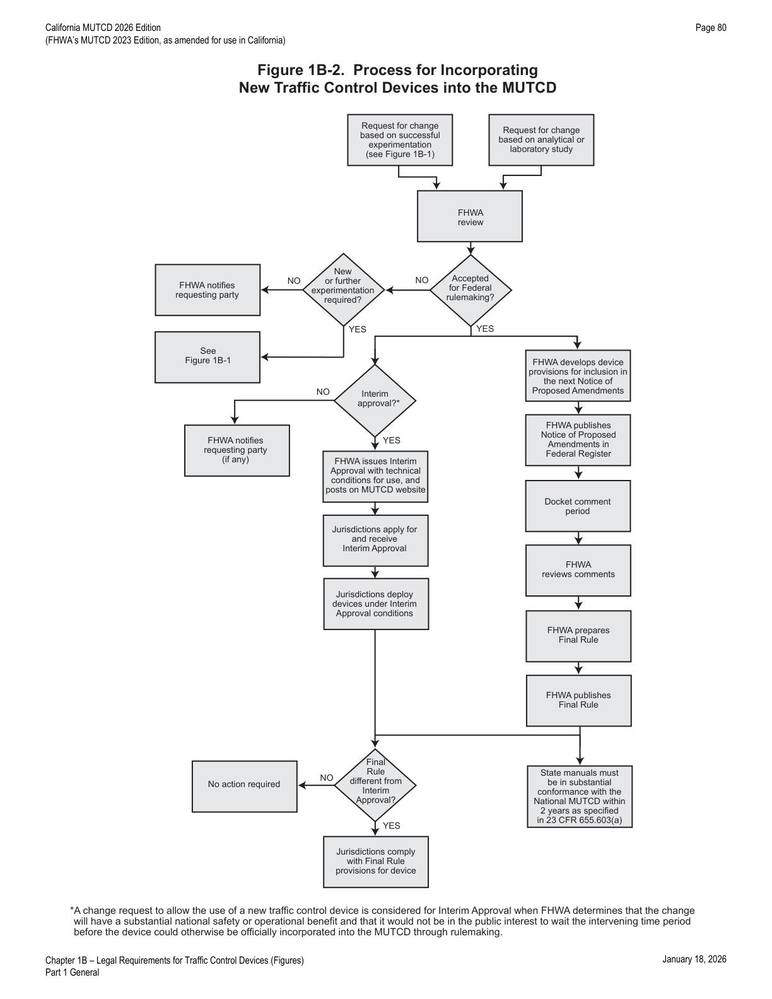
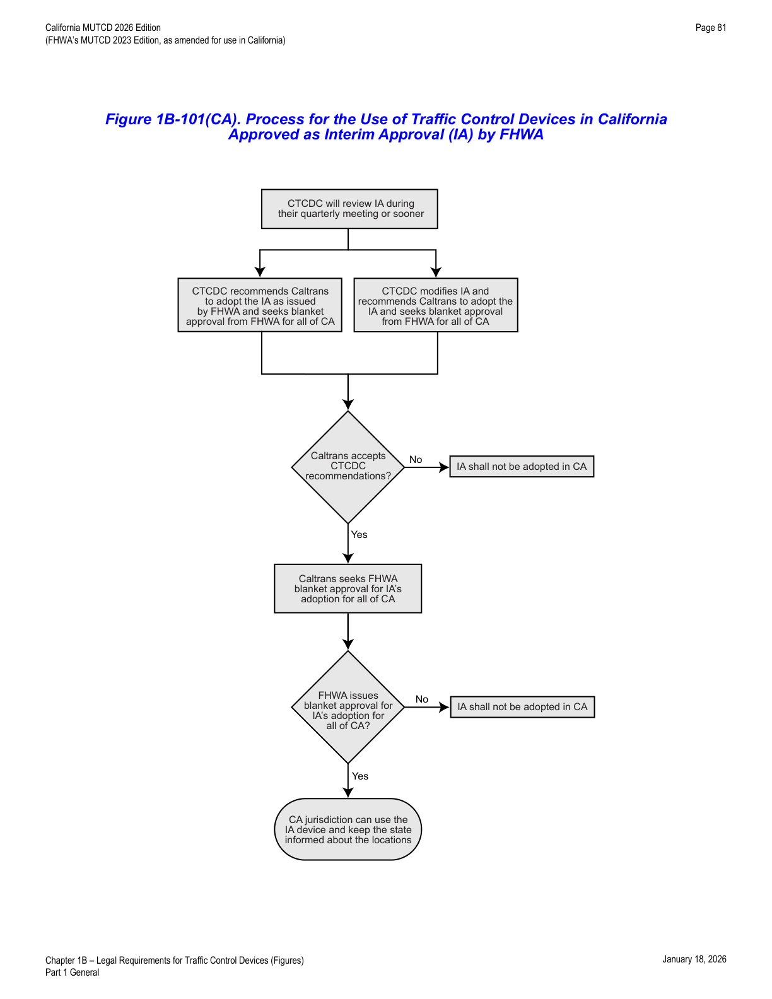

Part 1 · General · Chapter 1B
Legal Requirements for Traffic Control Devices
Establishes the MUTCD's status as the national and California state standard, defines compliance and target compliance dates, and sets out the processes for interpretations, experimentation, MUTCD changes, and interim approvals.
1B.01National Standard
- 01The Manual on Uniform Traffic Control Devices for Streets and Highways (MUTCD) is incorporated by reference in 23 CFR Part 655, Subpart F, and shall be recognized as the national standard for all traffic control devices installed on any street, highway, bikeway, or site roadway open to public travel (see Section 1C.02) in accordance with 23 U.S.C. 109(d) and 402(a).
- 02In accordance with 23 CFR 655.603(a), the MUTCD shall apply to all of the following types of facilities: (A) any street, roadway, or bikeway open to public travel, either publicly or privately owned; (B) streets and roadways on sites off the public right-of-way that are open to public travel without full-time access restrictions — examples include roadways within shopping centers, office parks, airports, sports arenas, other similar business and/or recreation facilities, governmental office complexes, schools, universities, recreational parks, and other similar publicly-owned complexes and/or recreation facilities (referred to in this Manual as site roadways open to public travel); (C) publicly-owned toll roads, including those under the jurisdiction of a public agency, public authority, or public-private partnership; (D) privately-owned toll roads where the public is allowed to travel without access restriction, including gated toll roads or roadways where the general public can pay to access the facility; and (E) grade crossings of publicly-owned roadways with railroads or light rail transit.
- 03The MUTCD shall not apply to: (A) roadways within private gated properties where access to the general public is restricted at all times; (B) grade crossings of privately-owned roadways with railroads; and (C) parking areas, including the driving aisles within those parking areas, whether publicly or privately owned.
- 03aRefer to FHWA's List of Known Errors for errors in the Paragraph 2 and 3 text. See Section 1A.04 for more details.
- 03bIn California, the California MUTCD — which has been reviewed by the FHWA CA Division and determined to be in substantial conformance with the National MUTCD — replaces the National MUTCD and shall be the state standard for all official traffic control devices.
- 03cCalifornia MUTCD shall be the standard for all traffic control devices installed on all of the following types of facilities: (A) any highway or street that is publicly owned and maintained and open to the use of the public for vehicular travel (see CVC §§ 360, 590, 21350, 21351, 21400, 21401, and California Government Code § 11340.9(h)); (B) any privately owned and maintained road upon which a city or county has enacted an ordinance or resolution regulating vehicular traffic (see CVC §§ 21100, 21100.1, 21107, 21107.5, 21107.6, and 21107.7), including private roads that: (1) are generally held open to the public for vehicular travel and connect with highways such that the public cannot determine the roads are not highways (CVC § 21107.5(a)); (2) are generally held open to the public for vehicular travel to serve commercial establishments (CVC § 21107.6(a)); or (3) are not generally held open to the public but, by reason of proximity to or connection with highways, the interests of residents and the motoring public are best served by application of these provisions (CVC § 21107.7(a)); and (C) any privately owned and maintained road on which the owner has erected a notice that the road is privately owned and maintained and subject to public traffic regulation or control (see CVC §§ 21100, 21100.1, 21107, 21107.5, 21107.6, and 21107.7).
- 03dCalifornia MUTCD shall not apply to any privately owned and maintained road under the following conditions: (A) where the owner has erected a notice of a size, shape, and color legible during daylight hours from 100 feet, stating the road is privately owned and maintained and not subject to public traffic regulation or control (CVC §§ 21107.5, 21107.6, 21107.7); or (B) where a city or county has not enacted an ordinance or resolution regulating vehicular traffic on the road (CVC §§ 21100, 21100.1, 21107, 21107.5, 21107.6, 21107.7).
- 03eThe use of this Manual is encouraged on all privately owned and maintained roads, in general, as a good practice. See Section 1D.02 for more information.
- 04The policies and procedures of the FHWA to obtain basic uniformity of traffic control devices are described in 23 CFR 655, Subpart F.
- 05Section 15-116 of the UVC (see Section 1A.06) states: "No person shall install or maintain in any area of private property used by the public any sign, signal, marking, or other device intended to regulate, warn, or guide traffic unless it conforms with the State manual and specifications adopted under Section 15-104." Adoption by agencies of such a provision through statute or ordinance can help maintain the integrity of official traffic control devices and provide continuity of uniformity at locations not subject to the provisions of this Manual.
1B.02State Adoption and Conformance
- 01All States have officially adopted the National MUTCD, either in its entirety, with supplemental provisions, or as a separate published document. The National MUTCD has also been adopted by the National Park Service, the U.S. Forest Service, the U.S. Military Command, the Bureau of Indian Affairs, the Bureau of Land Management, and the U.S. Fish and Wildlife Service.
- 02States or other Federal agencies that have their own MUTCDs or Supplements shall revise them to be in substantial conformance with changes to the National MUTCD within 2 years of the effective date of the Final Rule for the changes [23 CFR 655.603(b)(3)]. Substantial conformance of such State or other Federal agency MUTCDs or Supplements shall be as defined in 23 CFR 655.603(b)(1).
- 02aOn December 19, 2023, a Final Rule adopting the National MUTCD 2023 was published by the FHWA in the Federal Register, with an effective date of January 18, 2024. California does not automatically adopt the National MUTCD immediately upon its effective date. Caltrans revises the current CA MUTCD to adopt FHWA's changes and bring it into substantial conformance within two years from the effective date of the final rule. See Section 1A.01 for Caltrans' CA MUTCD annual revision cycle.
- 02bThis California MUTCD supersedes and replaces the previously adopted (April 1, 2025) California MUTCD 2014 Revision 9.
- 03For the purposes of Paragraph 2 of this Section, policies, directives, specifications, standard drawings, or similar documents issued by an agency that change or modify Standard, Guidance, or Option provisions in this Manual shall be considered supplements to the MUTCD and shall also be revised to be in substantial conformance with the National MUTCD.
- 04In accordance with 23 CFR 655.603(b)(1), in addition to a State MUTCD or Supplement, supplemental documents that a State issues — including but not limited to policies, directives, standard drawings or details, and specifications — shall not contravene or negate Standard or Guidance statements in the National MUTCD.
- 05Caltrans publishes Standard Plans, Standard Specifications, Standard Special Provisions, and other manuals and guidelines that also contain traffic control device specifications and requirements, including use and placement, for work on State highways. For the traffic control device portion of their content, these publications are considered supplemental documents to the California MUTCD. In some cases their specifications, while complying with the minimum standards of the California and National MUTCD, can be more stringent (a higher standard) than the California MUTCD.
- 06On State highways, the California MUTCD shall mean to include, but not be limited to, supplemental documents (for the traffic control device portion of their contents) such as Caltrans' publications of manuals, guidelines, handbooks, pamphlets, and other publications, including: (A) California Manual for Setting Speed Limits; (B) Changeable Message Sign (CMS) Guidelines; (C) Flagging Instructions Handbook; (D) Managed Lanes Guidelines; (E) Official Memos; (F) Proven Safety Countermeasure Guidance, Manuals and related publications; (G) Standard Plans; (H) Standard Special Provisions; (I) Standard Specifications; (J) Traffic Calming Guide; (K) Traffic Operation Policy Directives (TOPD); and (L) Traffic Safety Bulletins.
- 07Any revisions to these supplemental documents shall conform to, and not contravene or negate, any Standard and Guidance statements, figures, or tables of the California MUTCD.
- 08If there is a discrepancy between the supplemental documents and the California MUTCD, the California MUTCD shall govern.
- 09The following can be used to access some of these publications: (A) Caltrans Manuals — https://dot.ca.gov/manuals; (B) Caltrans Safety Program — https://dot.ca.gov/programs/safety-programs; and (C) Caltrans Traffic Operations — https://dot.ca.gov/programs/traffic-operations.
- 10The latest edition of Caltrans' California Sign Specifications shall be a part of this manual. If there are any discrepancies between the Sign Specifications and the California MUTCD, the California MUTCD shall govern. California Sign Specifications shall conform to, or not contravene or negate, any Standard and Guidance statements, figures, or tables of the California MUTCD.
- 11See https://dot.ca.gov/programs/safety-programs/sign-specs for Caltrans' California Sign Specifications.
1B.03Compliance of Devices
- 01The U.S. Secretary of Transportation, under authority granted by the Highway Safety Act of 1966, decreed that traffic control devices on all streets and highways open to public travel in accordance with 23 U.S.C. 109(d) and 402(a) in each State shall be in substantial conformance with the Standards issued or endorsed by the FHWA.
- 0223 CFR 655.603 also requires traffic control devices on all streets, highways, bikeways, and site roadways open to public travel in each State to be in substantial conformance with standards issued or endorsed by the Federal Highway Administrator.
- 03After the effective date of a new edition of the MUTCD, or a revision thereto, or after the adoption thereof by the State, whichever occurs later, new or reconstructed devices installed shall comply with the new edition or revision, as required by 23 CFR 655.603.
- 03aFor the purpose of the Standard in Paragraphs 4 and 5 of this Section, the reference to National MUTCD shall mean the California MUTCD. See Sections 1A.01 and 1B.01 and CVC §§ 21400 and 21401 for more details.
- 04For Federal-aid projects involving new construction, reconstruction, resurfacing, restoration, or rehabilitation of a facility to which this Manual applies, the traffic control devices installed (temporary or permanent) shall comply with the most recent edition of the National MUTCD before that highway is opened or re-opened to the public for unrestricted travel [23 CFR 655.603(d)(2) and (d)(3)].
- 05Unless a particular device is no longer serviceable (see Section 1C.02), non-compliant devices on existing highways and bikeways shall be brought into compliance with the current edition of the National MUTCD as part of the systematic upgrading of substandard traffic control devices (and installation of new required traffic control devices) required pursuant to the Highway Safety Program, 23 U.S.C. § 402(a).
- 06The FHWA has authority to establish other target compliance dates for implementation of particular MUTCD changes [23 CFR 655.603(d)(1)].
- 07The target compliance dates established by the FHWA shall be as shown in Table 1B-1. The target compliance dates previously established by the FHWA in the National MUTCD 2009 Edition shall be as shown in Table 1B-1(CA) (Sheet 1 of 2). The target compliance dates previously established by Caltrans pursuant to CTCDC recommendation shall be as shown in Table 1B-1(CA) (Sheet 2 of 2).
- 08Design, application, and placement of traffic control devices other than those adopted in this Manual shall be prohibited unless the provisions of Sections 1B.04 through 1B.08 are followed regarding official interpretations, experiments, changes to the MUTCD, and interim approvals granted by the FHWA.
| MUTCD Section(s) | Subject Area | Specific Provision | Compliance Date |
|---|---|---|---|
| 2B.64 | Weight Limit Signs | Par. 14 — requirement for additional Weight Limit sign with the advisory distance or directional legend in advance of applicable section of highway or structure | 5 years from the effective date of this edition of the MUTCD (January 18, 2029) |
| 2C.25 | Low Clearance Signs (W12-2) | Par. 1 — required posting of the Low Clearance Advance (W12-2) sign in advance of the structure | 5 years from the effective date of this edition of the MUTCD (January 18, 2029) |
| 2C.25 | Low Clearance Signs (W12-2a, W12-2b) | Par. 8 — recommended posting of Low Clearance Overhead (W12-2a or 12-2b) signs on an arch or other structure under which the clearance varies greatly | 5 years from the effective date of this edition of the MUTCD (January 18, 2029) |
| 3A.05 | Maintaining Minimum Retroreflectivity | Implementation and continued use of a method designed to maintain retroreflectivity of longitudinal pavement markings (see Par. 1 of Section 3A.05) | September 6, 2026 |
| 8B.16 | High-Profile Grade Crossings | Pars. 3 and 7 — recommended installation of Low Ground Clearance and/or Vehicle Exclusion signs and detour signs for vehicles with low ground clearances that might hang up on high-profile grade crossings at locations with a known history | 5 years from the effective date of this edition of the MUTCD (January 18, 2029) |
| 8D.09 through 8D.12 | Highway Traffic Signals at or Near Grade Crossings | Assessment and determination of appropriate treatment to achieve compliance (preemption, movement prohibition, pre-signals, queue cutter signals) | 10 years from the effective date of this edition of the MUTCD (January 18, 2034) |
| 2009 MUTCD Section(s) | 2009 MUTCD Section Title | Specific Provision | Compliance Date |
|---|---|---|---|
| 2A.08 | Maintaining Minimum Retroreflectivity | Implementation and continued use of an assessment or management method designed to maintain regulatory and warning sign retroreflectivity at or above established minimum levels (see Par. 2) | June 13, 2014* |
| 2A.19 | Lateral Offset | Crashworthiness of sign supports on roads with posted speed limit of 50 mph or higher (see Par. 2) | January 17, 2013 (date established in the 2000 MUTCD) |
| 2B.40 | ONE WAY Signs (R6-1, R6-2) | New requirements in the 2009 MUTCD for the number and locations of ONE WAY signs (see Pars. 4, 9, and 10) | December 31, 2019 |
| 2C.06 through 2C.14 | Horizontal Alignment Warning Signs | Revised requirements in the 2009 MUTCD regarding the use of various horizontal alignment signs (see Table 2C-5) | December 31, 2019 |
| 2E.31, 2E.33, and 2E.36 | Plaques for Left-Hand Exits | New requirement in the 2009 MUTCD to use E1-5aP and E1-5bP plaques for left-hand exits | December 31, 2014 |
| 3A.03 | Maintaining Minimum Retroreflectivity | Implementation and continued use of a method designed to maintain retroreflectivity of longitudinal pavement markings (see Par. 1) | September 6, 2026; 4 years from the effective date of this revision of the MUTCD |
| 4D.26 | Yellow Change and Red Clearance Intervals | New requirement in the 2009 MUTCD that durations of yellow change and red clearance intervals shall be determined using engineering practices (see Pars. 3 and 6) | 2017; June 13, 2014, or when timing adjustments are made to the individual intersection and/or corridor, whichever occurs first |
| 4E.06 | Pedestrian Intervals and Signal Phases | New requirement in the 2009 MUTCD that the pedestrian change interval shall not extend into the red clearance interval and shall be followed by a buffer interval of at least 3 seconds (see Par. 4) | 2017; June 13, 2014, or when timing adjustments are made to the individual intersection and/or corridor, whichever occurs first |
| 6D.03** | Worker Safety Considerations | New requirement in the 2009 MUTCD that all workers within the right-of-way shall wear high-visibility apparel (see Pars. 4, 6, and 7) | December 31, 2011 |
| 6E.02** | High-Visibility Safety Apparel | New requirement in the 2009 MUTCD that all flaggers within the right-of-way shall wear high-visibility apparel | December 31, 2011 |
| 7D.04** | Uniform of Adult Crossing Guards | New requirement in the 2009 MUTCD for high-visibility apparel for adult crossing guards | December 31, 2011 |
| 8B.03, 8B.04 | Grade Crossing (Crossbuck) Signs and Supports | Retroreflective strip on Crossbuck sign and support (see Par. 7 in Section 8B.03 and Pars. 15 and 18 in Section 8B.04) | December 31, 2019 |
| 8B.04 | Crossbuck Assemblies with YIELD or STOP Signs at Passive Grade Crossings | New requirement in the 2009 MUTCD for the use of STOP or YIELD signs with Crossbuck signs at passive grade crossings | December 31, 2019 |
* Types of signs other than regulatory or warning are to be added to an agency's management or assessment method as resources allow. ** MUTCD requirement is the result of a legislative mandate. All compliance dates previously published in Table I-2 of the 2009 MUTCD that do not appear in this revised table have been eliminated.
| 2014 CA MUTCD Section(s) | 2014 CA MUTCD Section Title | Specific Provision | Compliance Date |
|---|---|---|---|
| 4D.26 | Yellow Change & Red Clearance Intervals | Signalized intersections equipped with Red Light Cameras shall comply with 2014 CA MUTCD, Section 4D.26 | August 1, 2015 |
| 4D.26 | Yellow Change & Red Clearance Intervals | All signalized intersections shall comply with 2014 CA MUTCD, Section 4D.26 | August 1, 2017 |
- 09Many provisions in this Manual that are explicitly prohibitive were included to address practices shown to be ineffective, unsafe, or inconsistent with uniformity. A provision of mandatory or recommended practice represents accepted and established practice that promotes uniformity and consistency. The absence of an explicit prohibition in this Manual does not, in itself, constitute acceptability or permission to use a device in a manner not provided for in this Manual.
- 10Agencies should contact the FHWA when considering employing a practice or application not explicitly addressed in this Manual, to ensure continued compliance with the provisions in this Manual.
- 11The FHWA reviews and interprets the provisions in this Manual for agencies on an as-needed basis, which can lead to official interpretations (see Section 1B.04) or interim approvals (see Section 1B.07).
- 12A non-compliant traffic control device that is being replaced or refurbished because it is damaged, missing, or no longer serviceable (see Section 1C.02) for any reason shall be replaced with a compliant device, except as provided for in Paragraph 13 of this Section.
- 13A non-compliant traffic control device may be replaced in kind when engineering judgment indicates it is more appropriate because: (A) one compliant device in the midst of a series of adjacent non-compliant devices would be confusing to road users, and/or (B) the schedule for replacement of the whole series of non-compliant devices will result in achieving timely compliance with the MUTCD.
- 14Agencies may install traffic control devices included in previously approved construction plans that complied with the previous version of the CA MUTCD at the time of plan approval, if they have already been ordered.
- 15Except for traffic control devices with target compliance dates established by the FHWA (Table 1B-1) or by Caltrans using the CTCDC process (Table 1B-1(CA)), and traffic control devices not located within a construction work zone, all traffic control devices on existing highways and bikeways that have become non-compliant under adopted California MUTCD standards may remain in service through the end of their useful service life.
1B.04Interpretations
- 01The FHWA issues authoritative interpretations of this Manual when necessary to provide clarity in response to unique situations for device application or general requests for clarification of a provision.
- 02An interpretation includes consideration of the application and operation of standard traffic control devices, the official meanings of standard traffic control devices, or variations from standard device designs and design requirements.
- 03Requests for an interpretation of this Manual should contain: (A) a concise statement of the interpretation being sought; (B) a description of the condition that provoked the need for an interpretation; (C) any illustration that would help understand the request; and (D) any supporting research data pertinent to the item to be interpreted.
- 04Section 1B.08 contains information on submitting a request for interpretation.
1B.05Experimentation
- 01Requests for experimentation (see Section 1B.08) include consideration of field deployment to test or evaluate a new traffic control device, its application or manner of use, or a provision not specifically described in this Manual.
- 02A traffic control device or application that does not comply with the provisions of this Manual shall not be used on any street, highway, bikeway, or site roadway open to public travel (see Section 1C.02) without first receiving official approval to experiment from the FHWA's Office of Transportation Operations.
- 03A request for permission to experiment (see Section 1B.08) will be considered only when submitted by the public agency or toll facility authority responsible for operation of the road or street where the experiment is to take place. For a site roadway open to public travel, the request will be considered only if submitted by the private owner or official having jurisdiction.
- 04A request for experimentation with a novel device or application across multiple jurisdictions, as a single experiment with a common hypothesis, evaluation plan, and evaluation team, will be considered when submitted jointly by all authorities responsible for operation of the roads or streets involved. Similarly, a request to add experimental sites to an experimentation approved for another jurisdiction will be considered when submitted jointly by all authorities for operation of the roads or streets then involved.
- 05Manufacturers or inventors of novel devices are encouraged to engage a qualified traffic engineer or other professional versed in traffic control devices. Early engagement during concept and development helps ensure the efficacy of the device regarding human factors, operational, safety, and other considerations prior to an agency requesting experimentation.
- 06In some cases, an off-roadway closed-course or laboratory study might be required before a request for experimentation can be considered, to determine whether testing the device or application in an open-road setting could result in an undue safety risk.
- 07Before requesting permission to experiment with a new device or application, an owner of a site roadway open to public travel should first check for any laws, regulations, and/or directives covering the application of the MUTCD that might apply.
- 08An agency may request a preliminary assessment of the viability of a potential request for experimentation by submitting an abstract that briefly describes the experimental concept.
- 09A diagram indicating the process for requesting and conducting experimentations with traffic control devices is shown in Figure 1B-1.


In practice, an experimentation request in California is a dual-track submission: FHWA approval is required under Section 1B.05 for the traffic control device itself, while the CTCDC process (Figure 1B-1(CA)) is how Caltrans reviews the request, tracks it against other pending experiments, and eventually turns a successful experiment into a California MUTCD policy change.
- 10The request for permission to experiment shall contain the following: (A) a statement indicating the nature of the problem and a hypothesis establishing the premise of the experiment; (B) a description of the proposed change to the device or its application, including how it deviates from this Manual's provisions and how it is expected to improve on existing provisions; (C) illustrations that would help explain the device or its use; (D) supporting data on how the device was developed, including testing results (adequate/inadequate) and how the choice of device or application was derived; (E) comparison of the proposed device to other compliant devices or treatments addressing the same condition, if applicable; (F) a legally binding statement that the experimental device or application is in the public domain, per Paragraph 16 of this Section; (G) the time period and location(s) of the experiment; (H) control sites for comparison, or justification for not using control sites; (I) a detailed research and evaluation plan providing for close monitoring throughout all stages of field implementation, including an appropriate evaluation methodology (such as before-and-after analysis) and quantitative performance data; (J) an agreement to provide semi-annual progress reports for the duration of the experiment (per the schedule in Paragraph 12) and a final report to FHWA's Office of Transportation Operations within 3 months of completion (FHWA may terminate approval if reports are not received on schedule); and (K) an agreement to restore the experiment site to a condition complying with this Manual within 3 months following the end of the experiment's time period, to terminate the experiment at any time safety concerns are attributable to it (with timely notification to FHWA), and acknowledgment that FHWA's Office of Transportation Operations may terminate the experimentation at any time for safety, operational concerns, or non-adherence to approval terms; if a resulting request proposes changing this Manual to include the device or application, FHWA will determine whether it may remain in place pending official rulemaking.
- 11Where an item in Paragraph 10 of this Section is determined not to be applicable to the type of experiment, device, or application, the request shall provide sufficient explanation.
- 12The required semi-annual progress reports shall be submitted throughout the course of an approved experiment according to the following schedule: (A) no later than August 1st for the preceding period of January through June; and (B) no later than February 1st for the preceding period of July through December.
- 13The experimenting agency shall submit a semi-annual progress report for any approved experiment even if no work was performed during the previous reporting period. Failure to submit two consecutive progress reports shall result in termination of the experiment and rescission of FHWA's approval, requiring restoration of the site(s) to a condition complying with this Manual within 3 months.
- 14The experimenting agency shall submit a final report within 3 months of the conclusion of an approved experiment. If a final report is not received and the agency fails to notify FHWA of mitigating circumstances within 6 months of the end of the approved experimentation period, the experiment shall be considered terminated and shall constitute rescission of FHWA's approval, requiring restoration of the site(s) within 3 months.
- 15Under certain circumstances, the FHWA Office of Transportation Operations might allow an experimental device or application shown to be effective and without safety concerns to remain in use after the experiment ends — typically if it is actively being considered for interim approval under Section 1B.07.
- 16A request for experimentation involving a new traffic control device or a new application of an existing device shall include, from the agency conducting the experiment, the manufacturer and/or developer, and the supplier, a legally-binding statement certifying that the traffic control device is not protected by a patent, trademark, or copyright per Section 1D.06, that it is in the public domain and can be used freely without infringement or claim of trade secret misappropriation, and acknowledging that if such protection is established in the future, that action will result in the device's removal from the MUTCD, cancellation of its interim approval, or cancellation of the authorization for experimentation.
- 17For the purpose of the Standard in Paragraph 16, "traffic control device" refers to those aspects of a sign, signal, marking, or other device that regulates, warns, or guides traffic. The limitation on patent, trademark, or copyright protection does not extend to legal protection of individual elements — manufacturing methods, assembly methods, or individual components can be protected, whereas the traffic control device itself cannot be protected so long as it remains in this Manual. For example, an internal circuit board for an electronic traffic control device can be legally protected, but the electronic device itself or its operational function cannot.
- 18In addition to FHWA requirements, experimental traffic control devices are subject to the laws, regulations, and policies of the State of California.
- 19The agency shall request and receive approval from FHWA and Caltrans (using the CTCDC agenda item and process) prior to installation of experimentation devices on public roadways in California (see Figure 1B-1 and Figure 1B-1(CA)).
- 20Caltrans should present the request to the California Traffic Control Devices Committee (CTCDC) prior to any agency's installation of experimentation devices on public roadways in California.
- 21For information, contact: Executive Secretary, California Traffic Control Devices Committee — https://www.dot.ca.gov/programs/safety-programs/ctcdc.
- 22The California MUTCD contains the official standards and policies of the State of California for the design, application, and placement of traffic control devices.
- 23Experimentation is defined as research involving testing, evaluating, analyzing, or discovering the effect of a specific device, principle, supposition, etc., usually carried out in an operational context (though it could also be performed in a laboratory). The request for experimentation is a submission specifically requesting approval to use a non-standard device on public roadways to gather verification data.
- 24As used herein, "device" includes not only signs, signals, and markings, but also their application and manner of use.
- 25Requests for experimentation, interpretation, or changes relating to the California-edited portion of the California MUTCD should be sent to: Executive Secretary, California Traffic Control Devices Committee – MS36, P.O. Box 942874, Sacramento, CA-94274-0001.
Submission of Projects
- 26The following procedures apply to requests for experimentation.
- 27A request for permission to experiment will be considered only when submitted by the public agency or private toll facility responsible for operation of the road or street where the experiment is to take place.
- 28Experimentation requests shall contain Items A through K listed in Paragraph 10 of this Section.
Procedure for Processing Requests
- 29Requests for experimentation submitted without an explanation of the objective, scope, and duration will be returned to the originator for amplification. Processing then follows: (A) all requests are reviewed by Caltrans (Secretary of the CTCDC) to determine whether related experimentation has been scheduled, is in process, or already completed; (B) the Secretary lists the proposal on the next CTCDC meeting agenda for review and recommendation, including specific guidelines to be followed; (C) Caltrans' action on a CTCDC recommendation for experimental use of a non-conforming device could take several forms — recommend the device for limited use on an experimental project subject to FHWA approval, recommend it for limited use in a formal research project subject to FHWA approval, decline to recommend until satisfactory research or justification is submitted, or simply not recommend it; (D) if the result is a recommendation for limited use, the agency must submit the experimentation request to FHWA and receive official approval from FHWA's Office of Transportation Operations to conduct the experiment; (E) after Caltrans acts on the CTCDC recommendation, the Secretary notifies the originating party — if approved by FHWA, the originating party is asked to submit status reports at appropriate intervals, and upon completion a final report is prepared and forwarded to the Secretary for Committee review; and (F) the agency receiving FHWA approval must faithfully follow the specific experimentation guidelines, forward reports as indicated, and agree to terminate the experimentation upon notification.
Specific Guidelines for Experimental Proposal
- 30A specific proposal should be submitted for each request.
- 31This proposal can be submitted with the initial request or as a follow-up to specific CTCDC comments in its recommendation to Caltrans. After FHWA approval, the proposal becomes an integral part of the approved experimentation.
- 32Each proposal should include: (A) Scope — a detailed description of the experimentation, installation locations, and number of experimental projects; (B) Work Plan — the proposed plan of study, variables to be measured, evaluation criteria, observations/measures/data to be collected, whether carried out in the field or laboratory, how installations will be made, anticipated adverse effects on safety or operations and means to minimize them, and factors held constant or controlled to isolate the true effects of the device; (C) Time Periods — normally not less than six months nor more than two years; (D) Evaluation Procedures — Caltrans, via the CTCDC process, will recommend needed changes to evaluation criteria, if any, and may include advice from specialists such as human factors experts or statisticians to permit meaningful comparisons with standard installations; (E) Reporting — a written status report forwarded to the sponsor 45 days prior to each public meeting, and a final report completed within 90 days of the terminal date and forwarded to Caltrans (Secretary of the CTCDC), describing progress, deviations from the work plan, basic problem information, preliminary investigations, proposed solutions, study procedures, detailed data analysis, results, discussion, and conclusions (including recommended California MUTCD wording if a change is proposed); and (F) Administration — all proposals identify the sponsoring agency, the agency conducting the study, and the principal researchers' names and titles, with proof of professional traffic engineering capability and related expertise to perform the experimentation and evaluation.
Termination of Experimentation
- 33The project shall terminate at the end of the approved period unless an extension is granted in writing by FHWA, and all experimental devices and applications shall be removed unless specific permission is given for continued operation.
- 34FHWA could, at any time, terminate approval of experimentation if significant safety hazards are directly or indirectly attributable to it. Approval could also be terminated if no status report is received 45 days prior to each public meeting or no final report is received within 90 days of the terminal date.
Removal of Experimentation Installations
- 35All experimentation installations shall be removed upon termination of the experiment when FHWA and Caltrans decide the device is not warranted.
- 36The authority and reference cited for removal of experimentation installations is CVC § 21400.
1B.06Changes to the MUTCD
- 01Continuing advances in technology and approaches to traffic safety will produce changes in the highway, vehicle, and road-user proficiency; therefore, portions of the system of traffic control devices in this Manual will require updating. A procedure for recognizing these developments and introducing new ideas and modifications into the system is important.
- 02A change includes consideration of a new device to replace a present standard device, an additional device to be added to the list of standard devices, or a revision to a traffic control device application or placement criteria.
- 03Requests for a change to this Manual (see Section 1B.08) should contain: (A) a statement indicating what change is proposed; (B) any helpful illustration; and (C) any supporting research data pertinent to the item to be reviewed.
- 04Requests for a change to this Manual will be evaluated for potential safety and operational benefits and considered for inclusion in the next rulemaking to issue a new edition or revision of the Manual. A diagram indicating the process for incorporating new traffic control devices into this Manual is shown in Figure 1B-2.
- 05Refer to FHWA's List of Known Errors for an error in the Paragraph 4 text. See Section 1A.04 for more details.

1B.07Interim Approvals
- 01Interim approval allows for provisional use, pending official rulemaking, of a new traffic control device, a revision to the application or manner of use of an existing device, or a provision not specifically described in this Manual.
- 02The FHWA issues an interim approval by official memorandum signed by the Associate Administrator for Operations and posts this memorandum on the MUTCD website.
- 03Interim approval allows for the optional use of a device or application and does not create a new mandate or recommendation for its use. It includes conditions that jurisdictions, toll facility operators, or owners of site roadways open to public travel agree to comply with in order to use the device or application until an official rulemaking action has occurred.
- 04The issuance of an interim approval might result in the device or application being proposed for adoption in the next scheduled rulemaking. If not proposed in the next rulemaking, a statement of the status of the interim approval — whether rescinded or remaining in effect — will be included in the Federal Register notice for the rulemaking.
- 05Interim approval is considered based on the results of experimentation and/or analytical or laboratory studies that analytically demonstrate a device effectively communicates its intended meaning, including an assessment of relative risks, benefits, costs, impacts, and other factors.
- 06Section 1B.08 contains information on submitting a request for interim approval.
- 07Interim approval is ordinarily considered only after published authoritative research and experimentation sufficiently demonstrate that the device or application provides a significant safety or operational improvement. Individual experiments by various jurisdictions, without an overall research report, will not ordinarily qualify for issuance of an interim approval.
- 08Interim approval ordinarily is not considered based solely on non-U.S. experience with a new device or application, since differences in regulations, enforcement, penalties, and licensing can result in dissimilar road-user behavior, and design conventions can differ. However, documented non-U.S. experience can be considered in developing requests for experimentation (see Section 1B.05) and within the evaluation plan for device research.
- 08aSee Table 1B-101(CA) for the Interim Approvals issued by FHWA and their status in California.
- 09A jurisdiction, toll facility operator, or owner of a site roadway open to public travel that desires to use a device or application for which FHWA has issued an interim approval shall request and receive permission from FHWA in writing prior to applying the device or application.
- 10The request to place a device or application under an existing interim approval shall contain: (A) a description of where the device or application will be used (a list of specific locations or highway segments or types of situations, or a statement of intent to use it jurisdiction-wide); (B) an agreement to abide by the specific conditions for use contained in FHWA's interim approval memorandum; (C) an agreement to maintain and continually update a list of locations where the device or application has been installed; and (D) an agreement to (1) restore the site(s) to a condition complying with this Manual within 3 months following issuance of a Final Rule on the device or application, and (2) terminate use at any time safety concerns are attributable to it, with FHWA's Office of Transportation Operations retaining the right to terminate the interim approval at any time for safety, operational, or other concerns.
- 11A State may submit a request for permission to use a device or application under an existing interim approval for all jurisdictions in that State, as long as the request contains the information required in Paragraph 9 of this Section.
- 11aFigure 1B-101(CA) shows the process for the use of traffic control devices in California approved as interim approval by FHWA.
- 12A jurisdiction, toll facility operator, or owner of a site roadway open to public travel that elects to use a device or application under a statewide interim approval shall inform the State of its use of the device or application.
- 13Under a statewide interim approval, the respective jurisdictions, toll facility operators, and owners of site roadways open to public travel shall maintain and continually update a record of all locations on their roads where the device or application is implemented (see Item C of Paragraph 9) and shall furnish this information to the State.
- 14Refer to FHWA's List of Known Errors for errors in the Paragraph 11 and 13 text. See Section 1A.04 for more details.

| No. | Description | Date Issued by FHWA | Date Adopted in CA |
|---|---|---|---|
| IA-23 | Optional Use of Residential Driveway Temporary Signal | 1/8/25 | Pending |
Visit https://dot.ca.gov/programs/safety-programs/camutcd/interim for the full table, including web links and PDF files.
Note on Paragraph 11a above: the source text literally cites this diagram as "Figure 1A-101(CA)," but the figure sheet actually rendered under that description — reproduced above — is titled Figure 1B-101(CA). This is treated here as an apparent cross-reference labeling inconsistency in the source rather than corrected, consistent with a faithful reproduction of the Manual's text.
1B.08Requesting Official Interpretations, Experiments, Changes to the MUTCD, or Interim Approvals
- 01A local jurisdiction, toll facility operator, or owner of a site roadway open to public travel requesting permission to experiment, or permission to use a device or application under an existing interim approval, should first check for any State laws, regulations, and/or directives covering the application of the MUTCD provisions that might apply.
- 02Except as provided in Paragraph 3, requests for an interpretation, permission to experiment, a change to the MUTCD, granting of an interim approval, or permission to use an existing interim approval shall be submitted electronically to the FHWA, Office of Transportation Operations, MUTCD team, at MUTCDofficialrequest@dot.gov.
- 03If electronic submittal is not possible, requests may instead be mailed to: Office of Transportation Operations, HOTO-1, Federal Highway Administration, 1200 New Jersey Avenue, SE, Washington, DC 20590.
- 04Communications regarding other MUTCD matters not related to official requests will receive quicker attention if submitted electronically to the MUTCD Team Leader or the appropriate individual MUTCD technical lead team member, whose e-mail addresses are available through the "MUTCD Team" page on the MUTCD website (http://mutcd.fhwa.dot.gov/team.htm).
- 05For additional information concerning interpretations, experimentation, changes, or interim approvals, visit the MUTCD website at http://mutcd.fhwa.dot.gov.
★ Key Takeaways — Chapter 1B
- The MUTCD is incorporated by reference in 23 CFR 655 Subpart F as the national standard; in California, the CA MUTCD replaces it as the state standard under CVC § 21400 and Government Code § 11340.9(h).
- The MUTCD applies broadly to public and private roads/bikeways/site roadways open to public travel, but explicitly excludes gated private property, private railroad grade crossings, and parking areas/driving aisles.
- Four distinct FHWA-administered pathways exist for anything outside the Manual's standard provisions: interpretations (1B.04), experimentation (1B.05), MUTCD changes (1B.06), and interim approvals (1B.07) — all routed through the single request channel in 1B.08.
- In California, experimentation and interim-approval requests run in parallel through the CTCDC (Figures 1B-1(CA) and 1B-101(CA)), in addition to FHWA approval (Figure 1B-1).
- Target compliance dates for specific provisions are binding: e.g., Weight Limit signs, Low Clearance signs, and grade-crossing signal treatments carry 5- or 10-year compliance windows tied to this edition's January 18, 2024 effective date (Table 1B-1); older 2009-MUTCD-era and CA-specific dates are preserved in Table 1B-1(CA).
- Non-compliant devices generally may remain in service through their useful life unless a specific target compliance date applies or an engineering judgment favors uniform in-kind replacement.